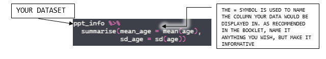
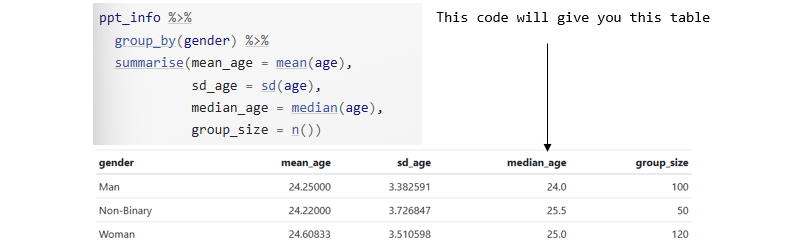
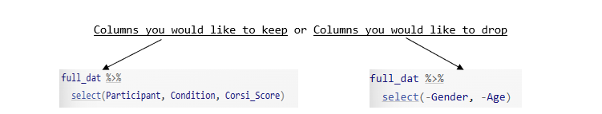

install.packages('package_name')Level 1: Data Skills
What is Each Function for?
Setting Up
This is typed in your console to download any desired packages.
-> Remember to put the name of the package in quotes.
library(package_name)Used this load a package that has the desired functions and datasets in it.
-> You are telling R ‘Make everything in this package available for me to use’.
read_csv(file = 'file_name')Use this to import .csv datasets into R Studio. -> Remember you can read in the datasets and asign them any name. For example:
data <- read_csv(file = 'file_name')Checking Your Data
summary('dataset_name')Use this to display all descriptive statistics of the desired dataset in the Console pane.
str('dataset_name')Use this to show the internal structure of a dataset, including variable types and example values.
- Some outputs in the Console Pane could be:
- num = numeric
- chr = character
- int = integer
- factor = categorical value
%>%This is called a pipe, used to take an pbject and send it to the next function. -> Read it as: ‘Take this dataset and then carry out this function on it’.
count('name_of_object')Use this to count the number of observations of the desired object in the dataset. For example = number of participants or the number of people in each gender.
data %>%
count()
or
data %>%
count(gender)summarise() Use this to create a table with the summary statistics you need.

In R for summary statistics, there are a couple of functions, and the most common ones are:
| Function | Description |
|---|---|
mean(x) |
Calculates the mean of a numeric vector |
median(x) |
Finds the median of x |
max(x) |
Finds the maximum value in x |
min(x) |
Finds the minimum value in x. |
var(x) |
Computes the variance of x |
n() |
Computes the number of observations, similar to count() BUT used inside other functions like summarise(n = n()) |
range(x) |
Displays the max and min value of the desired data |
sum(x) |
Calculates the sum of all values in x |
sd(x) |
Calculates standard deviation of x |
Consulted with (Data Summaries with Dplyr, 2022)
group_by()Used this to compute summary statistics in your desired groups. R will select the specified column and divide the data into groups.
Example from the booklet:

Data Transformation
inner_join(x = variable1, #The name of the first table you want to join.
y = variable2, #The name of the second table you want to join.
by ='x') #The name of the column the two tables have in common. Use this to make a new table from two datasets that have matching columns.
select()Use this to create a new dataset with just the columns you need, plus reorder them and rename them at the same time. * You have two options:

filter()This function is used to pick which rows you want to keep based on one or more criteria.